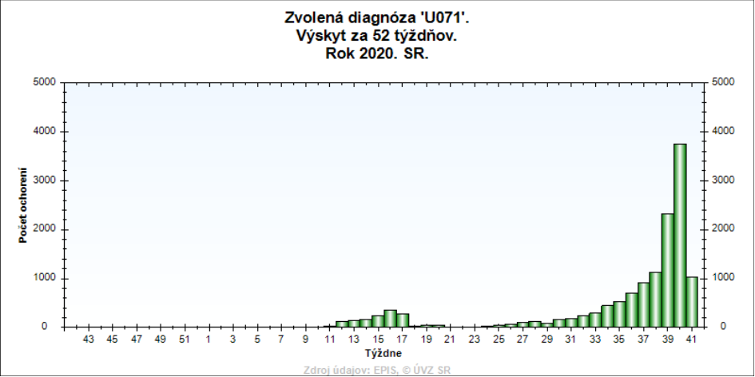
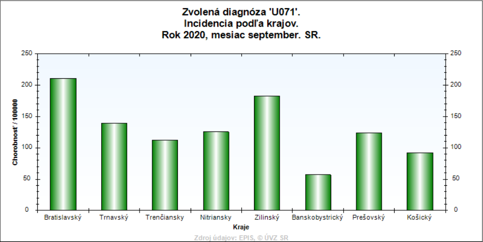
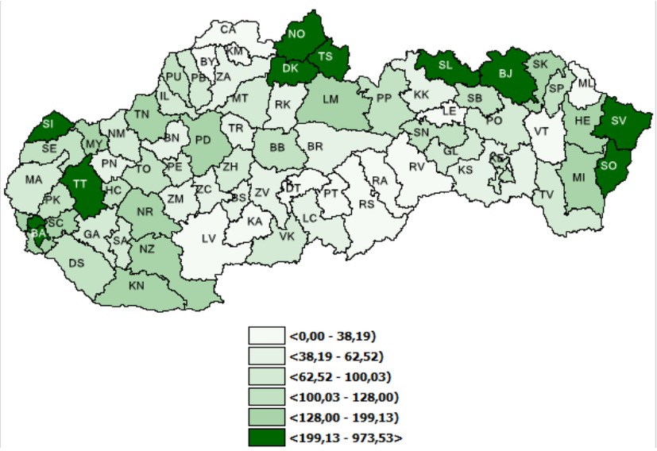
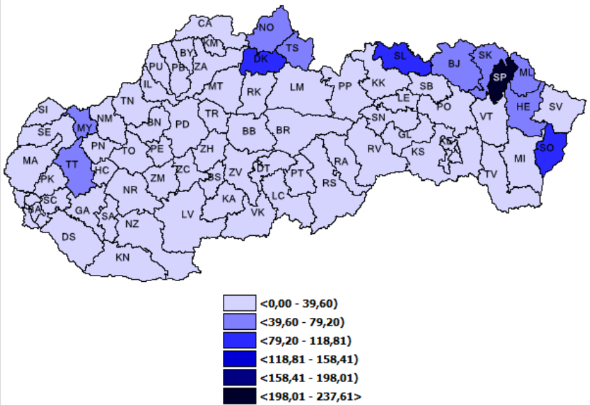

Štatistiky
Nižšie sú uvedené hlavné štatistické informácie o výskytu ochorenia COVID-19 za sledované obdobie (september 2020),
tak ako boli prezentované Úradom verejného zdravotníctva.
Výskyt ochorení podľa kalendárnych týždňov

Vekovo špecifická incidencia
Kliknutím na šípky prepínajte obrázky
Klinická forma prípadov COVID-19
Kliknutím na šípky prepínajte obrázky
Incidencia podľa krajov

Incidencia podľa okresov
Kliknutím na šípky prepínajte obrázky

Incidencia ako počet pozitívnych osôb prepočítaný na 100000 obyvateľov v každom okrese, vktorom majú pozitívne osoby bydlisko za september

Incidencia ako počet pozitívnych osôb prepočítaný na 100000 obyvateľov okresov, v ktorom sa pozitívne osoby nakazili za september.
Predchádzajúci
Ďalší
Importované nákazy

Návrat na hlavnú stránku